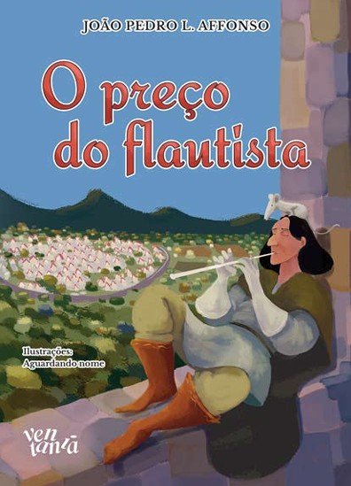
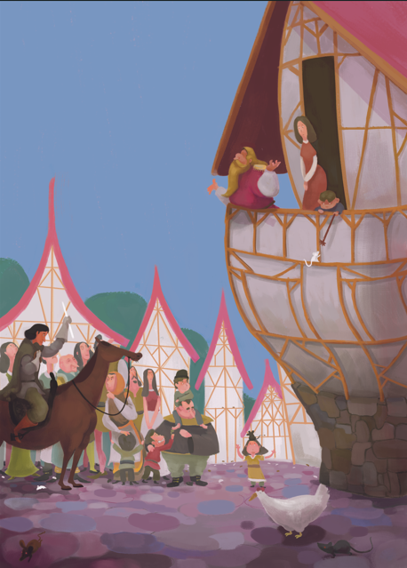
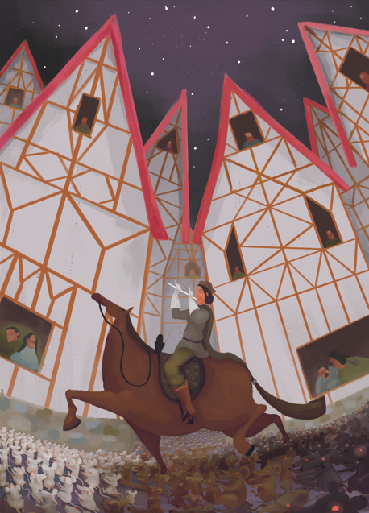
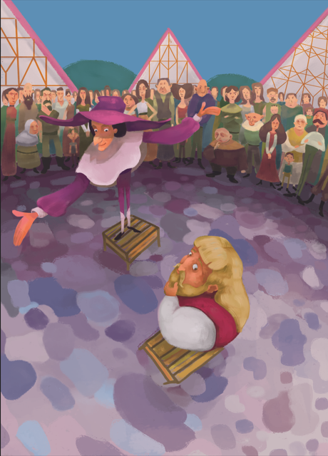
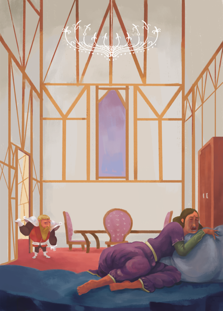
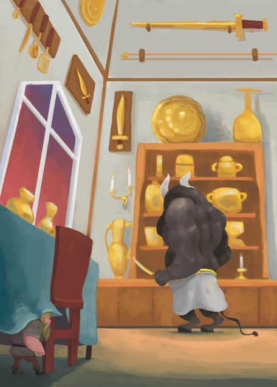
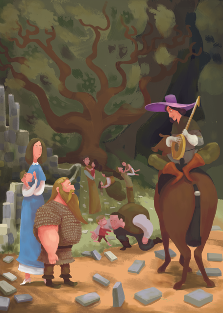

Uma estória sobre coragem
Uma releitura de um clássico.
...movimentada e próspera, mas sofre Com um problema que ninguém consegue resolver: uma infestação de ratos toma conta das ruas, das casas e dos comércios.
Enquanto os moradores discutem de quem é a culpa, surge um misterioso flautista que promete eliminar todos os roedores... em troca de uma recompensa.
Quando a cidade decide não cumprir o acordo, as consequéncias são muito mais graves do que qualquer poderia imaginar e aquilo que parecia apenas uma disputa por dinheiro transforma-se em uma jornada repleta de desafios, perigos e descobertas.
Entre florestas desconhecidas, mares distantes e segredos antigos, um homem que perdeu tudo precisará encontrar coragem para enfrentar seus erros e tentar salvar aqueles que mais ama.
Em uma releitura do clássico conto, João Pedro L. Affonso apresenta uma aventura sobre responsabilidade, honra e as consequências das escolhas que fazemos. Uma história para jovens leitores, mas também para qualquer adulto que já tenha desejado colher os frutos sem arcar com os custos.






